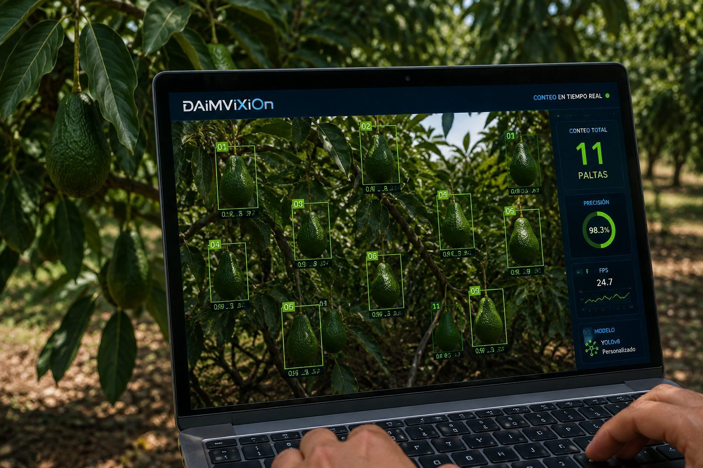
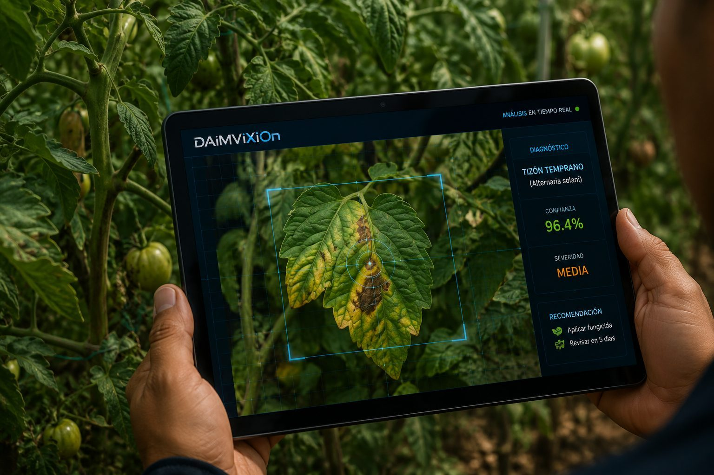
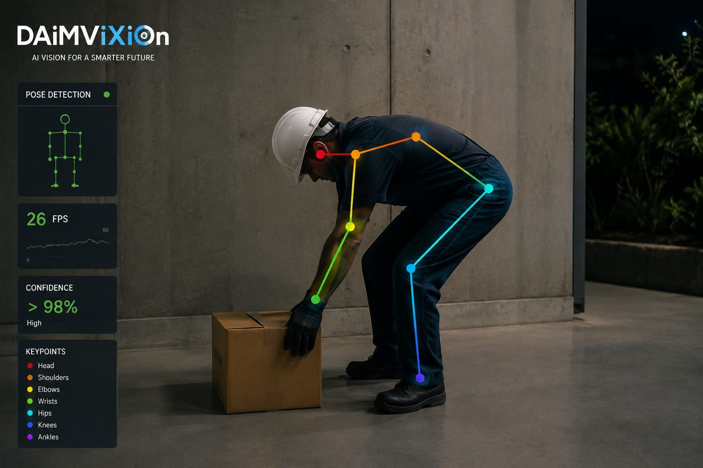
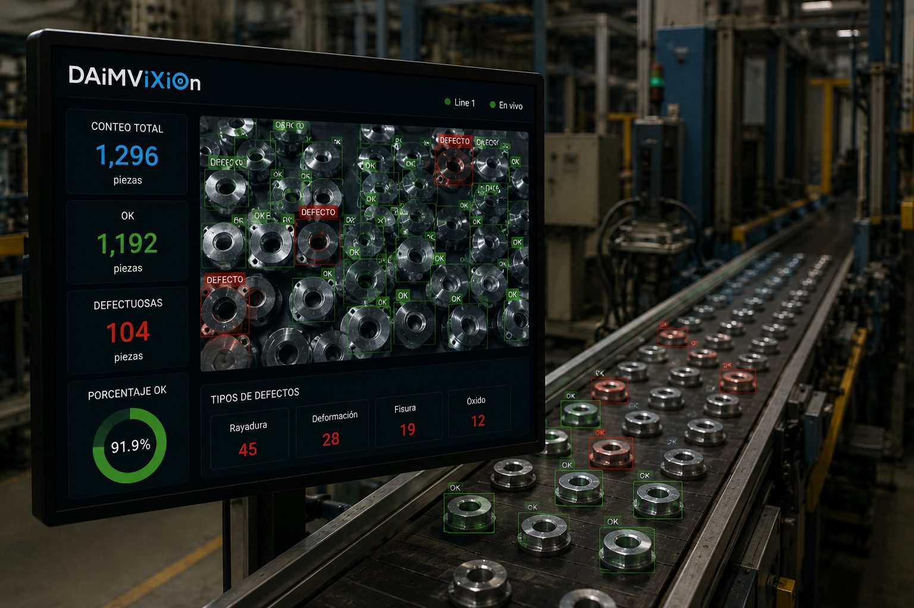
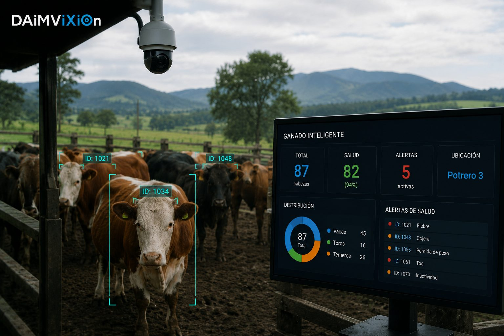

INTELIGENCIA
APLICADA.
Sistemas de IA construidos alrededor de problemas reales: detectar, contar, clasificar, estimar y procesar información.
SEGUIMIENTO · ACTIVO
CLASIFICACIÓN · LISTA
Todo lo que podemos
construir para ti.
No partimos de una tecnología para buscar dónde aplicarla. Partimos de tu problema y elegimos la herramienta correcta — sin importar el rubro de tu empresa.
Soluciones a medida
Desarrollamos soluciones de IA para cualquier problemática empresarial, sin importar el rubro o el tamaño de tu organización.
Data & Anotación
Equipo capacitado en clasificación, etiquetado y segmentación de datos. Hacemos el etiquetado manual y te entregamos el dataset listo para tu proyecto de Deep Learning.
Reentrenamiento de modelos
Adaptamos y especializamos modelos ya existentes para tu problemática específica, sin partir de cero.
Entrenamiento desde cero
Cuando el problema lo exige, construimos y entrenamos un modelo especializado específicamente para tu empresa u organización.
Automatización de procesos
Convertimos tareas repetitivas y manuales en flujos automáticos, con monitoreo y alertas.
Chatbots & Asistentes
Chatbots inteligentes para atención al cliente, soporte, información interna o procesos especializados.
Aplicaciones de IA
Cualquier aplicación de inteligencia artificial: web, APIs, dashboards, sistemas internos o plataformas inteligentes.
Computer Vision
Detección, clasificación, segmentación, tracking, conteo automático e inspección visual.
Cuatro pasos.
Un resultado.
IA aplicada.
Ejemplos de líneas de trabajo desarrolladas o exploradas por DAiMViXiOn. Las que tienen imagen son sistemas reales; las demás son líneas de trabajo que iremos documentando con casos reales.

SISTEMA REALConteo de paltas
Visión artificial para identificar y contabilizar frutos en campo, en tiempo real.

SISTEMA REALEnfermedades en cultivos
Clasificación y detección de enfermedades foliares a partir de imágenes.

SISTEMA REALDetección de pose
Análisis de postura y movimiento, incluyendo escenarios de seguridad ocupacional.
INCIDENTE · EN EVALUACIÓN
Detección de incumplimientos
Análisis visual para identificar comportamientos o condiciones de seguridad. Línea de trabajo en desarrollo.
ANÁLISIS · EN CURSO
Análisis de imágenes
Investigación y prototipos para apoyo en detección de enfermedades. Línea de trabajo en desarrollo.

SISTEMA REALConteo y desperfectos
Detección de productos, defectos y condiciones anómalas.

SISTEMA REALGanado inteligente
Conteo, detección de enfermedades y estimación de peso.
Procesamiento inteligente
Extracción, clasificación, análisis y automatización de información textual.
LLMs y automatización
Aplicaciones con modelos de lenguaje y sistemas generativos.
Del problema al resultado.
¿Tienes un problema que quieres automatizar?
Cuéntanos el proceso, las imágenes, datos o restricciones que tienes. Empezamos por entender el problema.